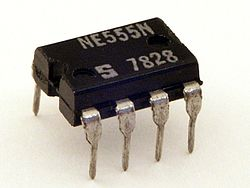
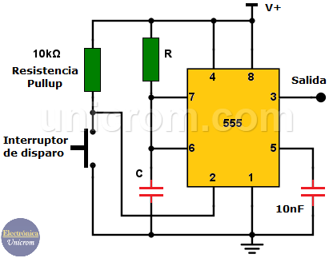
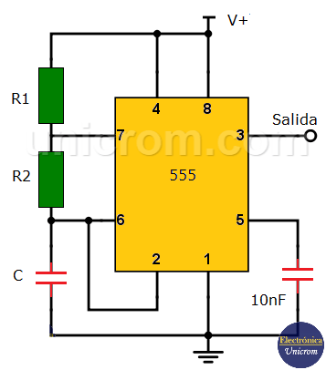
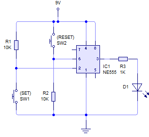

TIMER 555
El timer 555 es un integrado de temporizador muy popular y versátil en electrónica, usado principalmente para generar señales de tiempo precisas. Aquí tienes un resumen de su funcionamiento, aplicaciones, terminales y tipos:

FUNCIONAMIENTO
El 555 puede funcionar en tres modos principales: monostable, astable y bistable.
- Monostable: En este modo, el 555 genera un solo pulso de salida de duración determinada por un resistor y un condensador conectados externamente, luego vuelve a su estado de reposo. Se utiliza para generar pulsos.
- Astable: En este modo, el 555 actúa como un generador de onda cuadrada continua, alternando entre encenderse y apagarse, sin necesidad de una señal externa.
- Biestable: En este modo, el 555 puede funcionar como un flip-flop o interruptor, donde la salida cambia de estado entre alto y bajo dependiendo de las señales de activación.



Terminales:
El 555 tiene 8 terminales:

- Pin 1 (GND): Conectado a tierra (referencia 0V).
- Pin 2 (Trigger): Este pin se usa para activar el temporizador. En el modo monostable, el 555 genera una salida al recibir un pulso negativo en este pin.
- Pin 3 (Output): La salida del 555, que cambia de alto a bajo (o viceversa) según el modo de operación.
- Pin 4 (Reset): Se utiliza para reiniciar el temporizador. Si se aplica un pulso bajo, resetea el 555 y la salida se pone en bajo.
- Pin 5 (Control): Se usa para controlar el voltaje de referencia interno. Se conecta a un condensador de 10nF si no se va a usar.
- Pin 6 (Threshold): En el modo astable y monostable, este pin se conecta a un condensador y determina la duración de la señal de salida.
- Pin 7 (Discharge): Se utiliza para descargar el condensador durante el ciclo de temporizaci
- Pin 8 (VCC): Conectado a la fuente de alimentación positiva (generalmente +5V a +15V).
TIPOS
Existen varios tipos de temporizadores 555, aunque los más comunes son:
- NE555: Es el modelo clásico, muy popular en electrónica.
- LM555: Similar al NE555, fabricado por National Semiconductor (ahora parte de Texas Instruments).
- TLC555: Es una versión más eficiente y de bajo consumo, fabricada por Texas Instruments.
- C555: Versión de bajo costo, a veces usada en aplicaciones de menor precisión.
APLICACIONES:
El 555 se utiliza en variedad de circuitos debido a su versatilidad y facilidad de uso
- Generación de pulsos. En circuitos como generadores de reloj o en la modulación de señales
- Temporizadores: En circuitos donde se requiere un retardo específico, como en alarmas o luces intermitentes.
- Generación de señales cuadradas. Como osciladores en comunicaciones o pruebas de frecuencia
- Controles de encendido y apagado: En aplicaciones como control de relés, motores o LEDs
- Contadores y secuenciales: En circuitos digitales, donde se generan secuencias de pulsos o cambios de estado,

En resumen, el 555 es un componente clave para proyectos de temporización y generación de señales en electrónica, conocido por su simplicidad y eficacia.